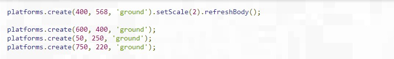
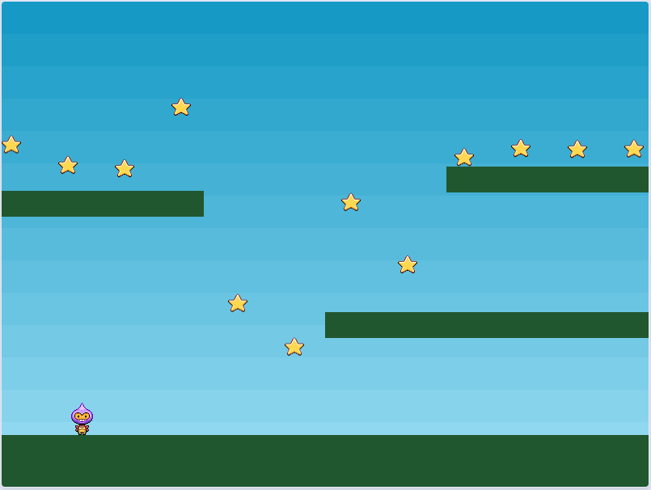

U nastavku možete pogledati detaljno objašnjenje za kreiranje vaše prve igre uz pomoć Phaser-a, pridružite se!
Preuzmite zip datoteku sa zvaničnog sajta koja sadrži svaki korak ovog uputstva u kodu i fajlovima koji idu uz njega. Morate imati osnovno znanje o JavaScriptu. Takođe se pobrinite da prođete kroz Vodič za početak rada, on će vam pokazati kako preuzeti okvir, postaviti lokalno razvojno okruženje i dati vam uvid u strukturu Phaser projekta i njegove osnovne funkcije. Ako ste prošli kroz Vodič za početak rada, preuzeli ste Phaser i sve ste podesili i spremni za kodiranje. Preuzmite resurse za ovaj vodič i raspakirajte ih u svoj Veb root. Otvorite part1.html stranicu u svom uređivaču po izboru i pogledajmo bliže kod. Nakon malog HTML-a koji uključuje Phaser, struktura koda izgleda ovako:
Config objekat je način na koji konfigurišete vašu Phaser igru. Postoji mnogo opcija koje se mogu postaviti u ovaj objekat i dok proširujete svoje znanje o Phaseru, susrešćete više njih. Ali u ovom tutorialu samo ćemo postaviti renderer, dimenzije i podrazumevanu scenu.
Učitavamo sredstva koja su nam potrebna za našu igru. To činite tako što ćete pozvati Phaser Loader unutar funkcije Scene koja se zove preload. Phaser će automatski tražiti ovu funkciju kada pokrene i učita sve što je definisano u njoj. Trenutno je funkcija preload prazna. Promenite ga u:
Ovo će se učitati u 5 objekata: 4 slike i sprite list. Nekima od vas može izgledati očigledno, ali želim da istaknem prvi parametar, takođe poznat kao ključ sredstva (tj. 'Nebo', 'bomba'). Ovaj niz je veza sa učitanim sredstvom i to je ono što ćete koristiti u svom kodu prilikom kreiranja Objekta igre. Slobodni ste da koristite bilo koji važeći JavaScript string kao ključ.
Da biste prikazali jednu od slika koju smo učitali, postavite sledeći kod unutar funkcije kreiranja: this.add.image (400, 300, 'nebo'); Ovo možete naći u part3.html. Ako ga učitate u pregledaču, sada bi trebalo da vidite ekran sa plavim nebom koji ga pokriva:
Pod haubom this.add.image kreira novi objekat Image Game i dodaje ga na trenutnu listu prikaza Scena. Ova lista je mesto gde svi vaši igrački objekti žive. Možete postaviti sliku bilo gde i Phaser neće smetati. Naravno, ako je izvan područja 0k0 do 800k600 onda ga nećete vizualno vidjeti, jer će biti "off screen", ali će i dalje postojati unutar Scene. Sama scena nema fiksnu veličinu i proteže se beskonačno u svim pravcima. Sistem kamere kontroliše vaš pogled na scenu i možete pomerati i zumirati aktivnu kameru prema potrebi. Takođe možete da kreirate nove kamere za druge prikaze u sceni. Ova tema je izvan opsega ovog specifičnog vodiča, dovoljno je reći da je sistem kamera u Phaser 3 znatno jači nego u v2. Stvari koje doslovno nisu bile moguće do sada su. Za sada napravimo Scenu dodavanjem pozadinske slike i nekih platformi. Evo ažurirane funkcije kreiranja:
Novi dodatak je svojstvo fizike. Sa ovim kodom na mestu ako ga pokrenete, a koji ćete pronaći kao part4.html u zip datoteci tutoriala, trebalo bi da vidite ovakvu scenu:
Upravo smo dodali gomilu koda našoj funkciji kreiranja koja zaslužuje detaljnije objašnjenje. Prvo, ovaj deo:
Ovo stvara novu statičku fizičku grupu i dodeljuje je lokalnim promenljivim platformama. U Arcade Phisics postoje dva tipa fizičkih tijela: Dinamic i Static. Dinamičko telo je ono koje se može kretati silama kao što su brzina ili ubrzanje. Može se odbiti i sudariti sa drugim objektima i na taj sudar utiče masa tela i drugi elementi. U oštrom kontrastu, Statično telo jednostavno ima poziciju i veličinu. Ne dodiruje ga gravitacija, ne možete postaviti brzinu na nju i kada se nešto sudari s njim, ona se nikada ne pomera. Statični po imenu, statični po prirodi. Savršeno za zemlju i platforme kojima ćemo dozvoliti da igrač igra okolo. Ali šta je grupa? Kao što i njihovo ime implicira, oni su načini da grupišete slične objekte i kontrolišete ih sve kao jednu jedinicu. Takođe možete proveriti koliziju između grupa i drugih objekata igre. Grupe su sposobne da kreiraju sopstvene objekte za igre preko praktičnih pomoćnih funkcija kao što su kreiranje. Grupa za fiziku će automatski kreirati decu koja su omogućila fiziku, štedeći vam neki posao u procesu. Sa našom platformom Grupa je napravila možemo da je koristimo za kreiranje platformi:
Postoji mnoštvo divnih platformi, napravi promenjljivu player i dodaj kod:
O animacijama ono što treba da bude poznato je da se ne učitava kao slika, a to je zato što sadrži okvire animacija.
Ukupno ima 9 kadrova, 4 za trčanje levo, 1 za okretanje ka kameri i 4 za trčanje desno. Definišemo dve animacije koje se zovu 'levo' i 'desno'. Evo leve animacije: 'Leva' animacija koristi okvire 0, 1, 2 i 3 i radi na 10 kadrova u sekundi. Vrednost 'repeat -1' govori animaciji da se ponavlja. Ovo je naš standardni ciklus i ponavljamo ga za trčanje u suprotnom smeru, koristeći taster 'desno' i poslednji za 'okret'.
Kada je Physics Sprite stvoren, dobija se svojstvo tela. Ovo predstavlja duh kao fizičko telo u Phasers Arcade Physics engine. Telo ima mnogo svojstava i metoda sa kojima možemo igrati. Na primer, da bi simulirali efekte gravitacije na duh, to je jednostavno kao pisanje: player.body.setGravityY(300) Ovo je proizvoljna vrednost, ali logično, što je veća vrednost, to je vaš objekat teži i što brže pada. Ako ovo dodate kodu ili pokrenete part5.html videćete da igrač pada bez zaustavljanja, potpuno ignorišući zemlju koju smo ranije napravili:
Verovatno biste mislili da idete u dokumentaciju i pretražujete kako da dodate događaj, ali to ovde nije potrebno. Phaser ima ugrađeni Menadžer za tastaturu i jedna od prednosti korišćenja ove male praktične funkcije: cursors = this.input.keyboard.createCursorKeys (); Ovo popunjava objekat kursora sa četiri svojstva: gore, dole, levo, desno, to su sve instance ključnih objekata.

Iako smo dodali mnogo koda, sve bi trebalo da bude prilično čitljivo. Prva stvar koju treba uraditi je da proverite da li se levi taster drži pritisnutim. Ako se drži 'desno', mi bukvalno radimo suprotno. Čišćenjem brzine i postavljanjem na ovaj način, svaki kadar, stvara stil pokreta "stop-start".
Završni deo koda dodaje mogućnost skoka. Gornji kursor je naš ključ za skok i mi testiramo da li je to spušteno. Međutim, mi takođe testiramo da li igrač dodiruje pod, inače bi mogli da skoče dok su u vazduhu. Igrač će automatski pasti na zemlju zbog gravitacije. Sa kontrolama na mestu sada imamo svet igara koji možemo da istražimo. Napunite part7.html i igrajte.
Vreme je da damo našoj maloj igri svrhu. Hajde da bacimo zvezde na scenu i dozvolimo igraču da ih sakupi. Da bismo to postigli, kreiraćemo novu grupu nazvanu 'stars' i popuniti je. Proces je sličan kada smo kreirali grupu platformi.
Kako nam trebaju zvezde da se kreću i odbijaju mi stvaramo dinamičku grupu fizike umesto statične. Vrednost odskoka znači da će se nasumično odbiti ponovo dok se konačno ne smire.Ako bismo pokrenuli kod kao što je sada, zvezde bi padale kroz dno igre i iz vida. Da zaustavimo to, moramo da proverimo koliziju sa platformama. Možemo da koristimo drugi objekat Collider da to uradimo: this.physics.add.collider (stars, platform); Pored toga, mi ćemo takođe proveriti da li se igrač preklapa sa zvezdicom ili ne: this.physics.add.overlap (player, stars, collectStar, null, this); To govori Phaseru da proveri preklapanje između igrača i bilo koje zvezde u grupi zvezda. Ako se pronađu onda se prosleđuju funkciji "collectStar":function collectStar (player, star)
{
star.disableBody(true, true);
}

var score = 0;
var scoreText;
ScoreText se postavlja u funkciji kreiranja:
scoreText = this.add.text (16, 16, 'score: 0', {fontSize: '32px', fill: '# 000'});
16 x 16 je koordinata za prikaz teksta. 'score: 0' je podrazumevani niz za prikaz i
objekat
koji sledi sadrži veličinu fonta i boju prikaza. Ako ne navedete koji će nam font
zapravo
koristiti Phaser podrazumevano, to je Courier.
Zatim moramo da izmenimo funkciju collectStar tako da kada igrač uzme zvezdu, njihov
rezultat se povećava i tekst se ažurira tako da odražava ovo:
function collectStar (player, star)
{
star.disableBody(true, true);
score += 10;
scoreText.setText('Score: ' + score);
}
Da bi zaobišli našu igru, vreme je da dodamo nešto loše. Ovo će dati dobar element izazova igri, nešto što je prethodno nedostajalo. Ideja je sledeća: Kada sakupite sve zvezde prvi put, ona će osloboditi odskočnu bombu. Bomba će samo slučajno odskočiti oko nivoa i ako se sudariš s njim, umrećeš. Sve zvezde će se ponovo pojaviti, tako da ih možete ponovo sakupiti, a ako to učinite, oslobodiće još jednu bombu. Ovo će dati igraču izazov: dobiti što je moguće više bodova bez umiranja. Prva stvar koja nam je potrebna je grupa za bombe i par Colliders:
bombs = this.physics.add.group();
this.physics.add.collider(bombs, platforms);
this.physics.add.collider(player, bombs, hitBomb, null, this);
Bombe će naravno odbiti o platforme, a ako ih igrač pogodi, pozvat ćemo funkciju hitBomb. Sve što ćete uraditi je da zaustavite igru i uključite crveno:
Do sada, tako dobro, ali moramo osloboditi bombu. Da bismo to uradili, modifikujemo funkciju collectStar:
Koristimo metodu Grupe nazvanu CountActive da bismo videli koliko je zvezda ostalo "živo". Ako nije, onda je igrač sakupio sve, tako da mi koristimo funkciju da ponovo omogućimo sve zvezde i vratimo njihovu poziciju na nulu. Ovo će učiniti da sve zvezde ponovo padnu sa vrha ekrana. Sledeći deo koda stvara bombu. Prvo odaberemo slučajnu k koordinatu za nju, uvek na suprotnoj strani ekrana za igrača, samo da bismo im pružili šansu. Onda je stvorena bomba, postavljena je da se sudari sa svetom, odbije i ima slučajnu brzinu. Krajnji rezultat je lepi mali štit koji se okreće oko ekrana. Dovoljno malen da bi se lako izbegao, na početku, ali čim se brojevi povećaju, postaje mnogo teže!